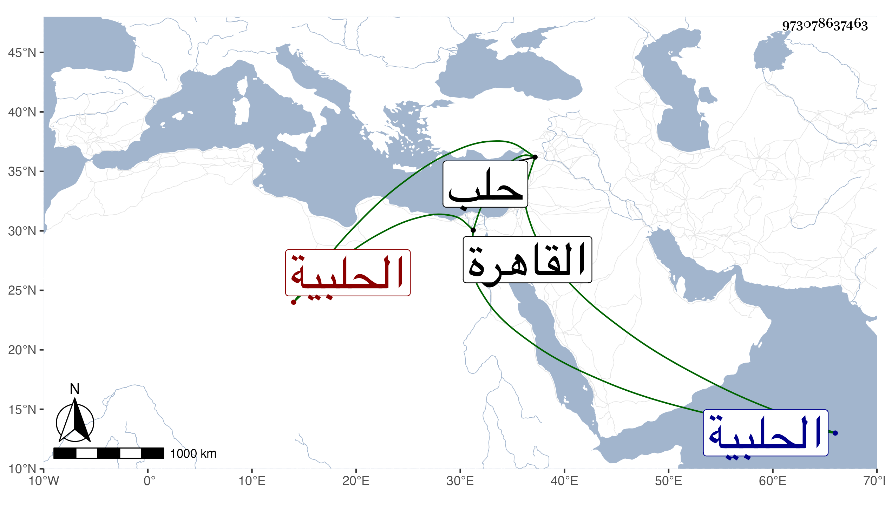

0902Sakhawi.DawLamic.ITO20230111-ara1.EIS1600.973078637463
Biography ID: 973078637463
751
ليلى ابنة محمود بن طوغان الحلبية ، تزوجها شيخنا بحلب في سنة ست وثلاثين وهي ذات ولدين بالغين ، وقدمت عليه القاهرة ثم رجعت إلى بلدها ثم عادت فأقامت في عصمته حتى مات عنها ، وتزوجت عدة أزواج ثم ماتت في منتصف رجب سنة احدى وثمانين وقد قاربت الثمانين سامحها الله . وهي المشار اليها في قول شيخنا :
| رحلت وخلفت الحبيب بداره | برغمي ولم أجنح إلى غيره ميلا |
| أشاغل نفسي بالحديث تعللا | نهاري وفي ليلي أحن إلى ليلى |
